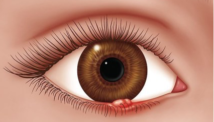
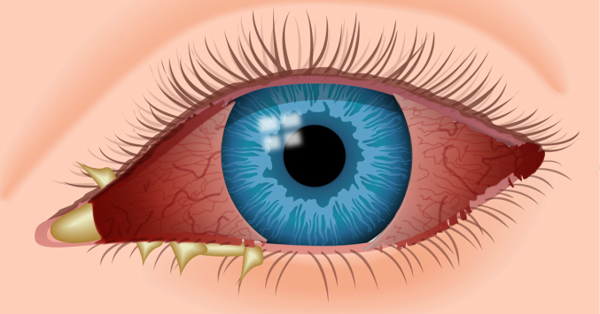
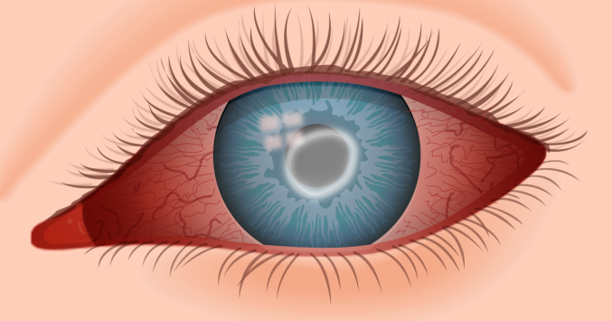

Cours de Microbiologie
Microorganisme : Tout organisme microscopique (bactéries, champignons, protozoaires, algues, virus).
Microbiologie : Science qui étudie les microorganismes.
Microbiologie médicale : Étude des microorganismes pathogènes pour l'Homme.
Bactéries : Microorganismes procaryotes, unicellulaires, ubiquitaires dont plusieurs peuvent être pathogènes pour l'Homme.
Observation au microscope après coloration pour déterminer forme et arrangement des bactéries.
Composants de la cellule bactérienne et leurs fonctions spécifiques.
Multiplication par fission binaire (scissiparité) : une cellule donne deux cellules filles identiques.
Courbe de croissance bactérienne : L'allure est la même pour toutes les bactéries en culture dans un milieu fermé
Adaptation des bactéries au milieu
Les bactéries se divisent sans arrêt. Le taux de croissance est maximal et constant
Arrêt de la croissance car présence de déchets toxiques et épuisement du milieu nutritif
Les bactéries ne se divisent plus, elles meurent par lyse cellulaire
Mésophiles : T° de croissance entre 20° et 40°C (bactéries pathogènes de l'Homme à 37°C)
Exemple : E. coli
Thermophiles : T° de croissance entre 45°C et 70°C
Exemple : Bacillus (sources thermales)
Psychrophiles : T° de croissance < 20°C avec optimum à 15°C
Exemple : Pseudomonas (aliments, glaciers)
Aéro-anaérobies facultatives : Se développent avec ou sans oxygène
Exemple : Entérobactéries
Aérobies strictes : Ne se développent qu'en présence d'oxygène
Exemple : Pseudomonas
Micro-aérophiles : Se développent avec de petites quantités d'oxygène
Exemple : Campylobacter
Anaérobies strictes : Se développent en absence d'oxygène
Exemple : Clostridium
Neutrophiles : pH neutre (7 à 7.5)
Exemple : E. coli
Acidophiles : pH < 7
Exemple : Lactobacillus
Alcalophiles : pH > 7
Exemple : Vibrio cholerae
Bactéries vivant dans l'environnement (eau, sol, végétaux)
Flore résidente du corps humain (E. coli flore intestinale, staphylocoques commensaux flore cutanée)
Deviennent pathogènes dans certaines conditions (baisse immunitaire, E. coli responsables d’infections urinaires, Staphylococcus epidermis responsable d’abcès)
Provoquent des maladies spécifiques chez l'Homme sain
Mycobacterium tuberculosis responsable de la tuberculose, Salmonella typhi responsable de la fièvre typhoïde ….
| Infection | Bactérie | Mode de transmission | Symptômes | Image |
|---|---|---|---|---|
| Orgelet Infection au niveau de la base d'un cil |
Staphylocoques | Par le toucher ou le frottement des yeux | Le bord de la paupière au niveau de l'infection enfle et rougit, et une petite bosse pouvant être douloureuse apparaît |  |
| Conjonctivite bactérienne Inflammation de la conjonctive |
Streptocoques et Staphylocoques | Par les mains ou des objets contaminés: serviettes, oreillers… | Démangeaisons, rougeurs, sensations de picotements (grains de sable), écoulement pouvant être purulent |  |
| Kératite infectieuse Inflammation de la cornée |
Staphylocoques, Pseudomonas | Port de lentilles de contact (manque d'hygiène dans la manipulation et l'entretien des lentilles) | Rougeur et douleur au niveau de l'œil, baisse de la vision et photophobie |  |
Antibiotiques : Médicaments utilisés pour traiter les infections bactériennes, ils sont inactifs contre les infections virales.
Spectre d'activité : Ensemble des espèces bactériennes sensibles à un antibiotique donné.
Technique de laboratoire permettant :
Résistance aux antibiotiques : Une bactérie est résistante lorsque son développement n'est pas perturbé par l'antibiotique.
Toutes les souches d'une espèce bactérienne sont naturellement résistantes à un antibiotique donné.
Cette résistance est portée par les gènes du chromosome bactérien.
Exemple : Résistance de Pseudomonas aeruginosa à la Kanamycine.
Cette résistance est stable et durable.
Des souches bactériennes normalement sensibles deviennent résistantes à un antibiotique.
Cette résistance est transmise d'une bactérie à une autre par les plasmides.
Cette résistance n'est pas stable, elle est variable et transitoire.
Bactéries multirésistantes (BMR) : Bactéries résistantes à plusieurs antibiotiques.
Les BMR ne sont pas plus virulentes mais provoquent des infections plus difficiles à traiter.
Les BMR sont en augmentation constante.
Testez vos connaissances avec ce quiz interactif. Sélectionnez la bonne réponse pour chaque question.
Répondez aux questions suivantes en écrivant vos réponses dans les champs prévus. Cliquez sur "Corriger le test" pour obtenir votre score.
Réponse attendue: Les bactéries commensales font partie de la flore résidente normale et ne causent généralement pas de maladie. Les bactéries pathogènes opportunistes sont des commensales qui deviennent pathogènes dans certaines conditions comme une immunodépression.
Réponse attendue: 1) Phase de latence: adaptation au milieu. 2) Phase de croissance: division active et constante. 3) Phase stationnaire: arrêt de croissance dû aux déchets et épuisement des nutriments. 4) Phase de déclin: mort cellulaire par lyse.
Réponse attendue: Surconsommation d'antibiotiques, prescription excessive d'antibiotiques à large spectre, non-respect des doses et durée du traitement, utilisation massive en médecine vétérinaire.
Réponse attendue: La résistance naturelle est présente chez toutes les souches d'une espèce, portée par les gènes chromosomiques, stable et durable. La résistance acquise apparaît chez des souches normalement sensibles, transmise par plasmides, variable et transitoire.
Réponse attendue: Les bactéries ont besoin d'eau comme principal composant cellulaire, de carbone comme élément constitutif principal, d'azote pour les protéines, et d'éléments minéraux comme le phosphore et le soufre pour les acides nucléiques et protéines.
Réponse attendue: 1) Aérobies strictes: ne se développent qu'en présence d'oxygène. 2) Anaérobies strictes: se développent en absence d'oxygène. 3) Micro-aérophiles: se développent avec de petites quantités d'oxygène. 4) Aéro-anaérobies facultatives: se développent avec ou sans oxygène.
Réponse attendue: Un antibiogramme est une technique de laboratoire permettant d'étudier la sensibilité d'une souche bactérienne vis-à-vis de plusieurs antibiotiques et de déterminer la concentration minimale inhibitrice (CMI) d'un antibiotique pour une souche bactérienne.
Réponse attendue: 1) Orgelet: infection à Staphylocoques, transmission par contact, symptômes: gonflement et rougeur de la paupière. 2) Conjonctivite bactérienne: causée par Streptocoques et Staphylocoques, transmission par objets contaminés, symptômes: démangeaisons et écoulement. 3) Kératite infectieuse: causée par Staphylocoques et Pseudomonas, liée au port de lentilles, symptômes: douleur et baisse de vision.